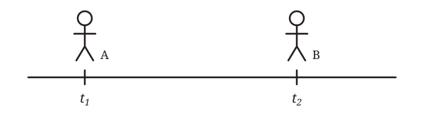
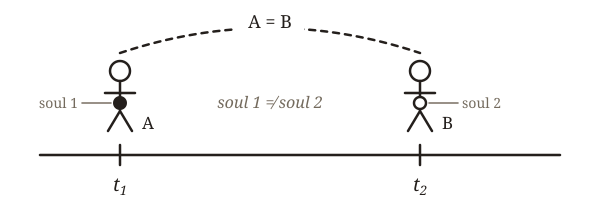
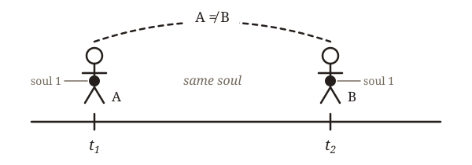

Personal Identity - Locke
PHIL-1 Lecture notes
1. What the debate over personal identity is about
1.1 The story of Kim Suozzi
Is death permanent?
Here’s an article from 2015 about a young woman, Kim Suozzi, who had recently died of cancer.
The article is about the unconventional steps Kim took in order to try to make her death only temporary.
Read the first page of the NY Times story about Kim Suozzi.
Kim and Josh are hoping that Kim herself will one day live again.
They seem to have a couple of different thoughts about how that might happen:
Is it really possible, though, for Kim to live again?
There are various scientific obstacles to Kim’s vision. The article talks about some of these.
But even if all of the purely scientific barriers are overcome, a more philosophical doubt lingers. Would it really be Kim back in existence again?
We may pose the philosophical question this way.
Here is Kim before she dies. Call that time t1. Suppose that all the science works out. So now we have this individual at some later time. Call that time t2. They wake up and think to themselves, “Wow! It worked! But what year is it? Are my parents still alive? Is Josh?...”

Is that person Kim?
Or, to ask that same question in a different way, we might give a name to this person.
Let’s not call her `Kim’ since that would prejudge the very issue that we want to ask about.
Let’s call her `Kayla.’
Is it the case that Kayla = Kim? Or no? What do you think?
1.2 What does it take for me to exist?
Trying to answer that question makes one wrestle with this problem: what does it take for me to exist?
We all undergo lots of changes over the course of our lives. But what is the limit? Can I get a whole new body? Could I come to have an entirely different personality? A whole different set of beliefs? What is absolutely essential to me, and what is not?
This is what the philosophical debate over personal identity is about.
Part of what makes it important is that it’s tied up with the issue of an afterlife.
We can’t decide whether an afterlife is even possible---whether it’s possible for me to exist after my earthly demise---without deciding under what conditions I continue on.
2. What a criterion of personal identity is
So the case of Kim Suozzi raises a more general issue: under what conditions does a person continue on?
A so-called “criterion of personal identity” puts forward an answer.
So let’s talk about what a criterion of personal identity is.
So suppose that there is a person A, that exists at an intial time t1. Maybe you encountered them at this time. At a later time t2, you encounter a person B. B might just be A, or might not:

A criterion of personal identity answers two questions.
2.1 What is sufficient for identity?
The first question is: what would absolutely guarantee that B = A?
So suppose that the clothes that B is wearing at t2 are the very clothes that A was wearing at t1. Is that a guarantee that B = A?
No, B could just be a friend borrowing A’s clothes.
What if the physical features of B at t2 exactly match up with the physical features of A at t1? Is that a guarantee that B = A?
No, because B could be A’s identical twin.
Is there something that would guarantee that B = A (beyond the trivial, e.g., that B is A)?
A criterion of personal identity offers an answer to that question.
2.2 What is necessary for identity?
A separate question is: if B = A, what must follow?
So, for example, suppose that B = A. Does that necessarily imply that the physical features of B at t2 exactly match the physical features of A at t1?
No, the same person can change their physical features over time.
Or again suppose that B = A. Does that necessarily imply that the set of beliefs that B has at t2 is the very same set of beliefs that A has at t1?
No, because the same person can change at least some of their beliefs over time.
So what does necessarily follow from the supposition that B = A?
A criteron of personal identity answers this question as well.
2.3 What is necessary and sufficient?
So a criterion of personal identity is an answer to the following question:
Under what conditions, exactly, is it true to say that B = A? That is, what are the necessary and sufficient conditions for that?
3. The soul criterion
One option is what we might call the soul criterion.
3.1 What the soul criterion says
The proponent of this view assumes that each of us has an immaterial soul. And then they hold that:
One objection to this view is that the basic assumption upon which it is based is wrong. There are no such things as immaterial souls.
But the philosopher John Locke had some other objections---objections which did not depend on denying that there are such things souls.
3.2 Locke’s objections
3.2.1 Same soul is not necessary for identity
First, Locke questioned whether it’s necessary for B and A to be the same individual that the soul that is in A at t1 is the very soul that is in B at t2.
In other words, he suggested that it might be the case that B and A are the very same individual, even though the soul that is in A at t1 is not the very soul that is in B at t2.

Read paragraph 13.
He writes:
[I]f the same consciousness can be transferred from one thinking substance to another, it will be possible that two thinking substances may make but one person.
And why couldn’t the same consciousness be transferred from one soul to another?
3.2.2 Same soul is not sufficient for identity
Second, Locke questioned whether it’s sufficient for B and A to be the same individual that the soul that is in A at t1 is the very soul that is in B at t2.
In other words, he suggested that it might happen that even though the soul that is in A at t1 is the very soul that is in B at t2, B and A are still distinct individuals.

Read paragraph 14.
Even if it’s true that the soul that is in you now is the very soul that was in Socrates back in ancient Greece, it’s still not the case that you are Socrates.
4. Locke’s memory criterion
4.1 What the memory criterion says
4.1.1 Memory is necessary for identity
Locke holds that even if the soul that is in you now is the very soul that was in Socrates back in ancient Greece, you still are not Socrates.
But why not? Why, even then, are you not Socrates?
Because you are not “conscious of any of Socrates’s actions or thoughts.”
This suggests that, on Locke’s view, memory is necessary for personal identity.
That is, it suggests that, according to Locke, if it’s true that B and A are one and the same individual, then it has to be the case that B, at the later time t2, can remember some of the actions, thoughts, experiences, of A back at time t1.
4.1.2 Memory is sufficient for identity
Some passages from Locke seem to imply that, on his view, it’s also true that memory is sufficent for personal identity.
Read paragraph 16 and paragraph 19.
4.1.3 Memory is necessary and sufficient for identity
So Locke seems to accept what is often called the memory criterion of personal identity:
4.2 An obvious objection and Locke’s response
4.2.1 Memory is not necessary for identity
There is an obvious objection to the memory criterion. Namely, is memory really necessary for identity?
Can’t a person lose all memory of a certain stretch of their life? That doesn’t mean that it was not them who did those things.
4.2.2 Locke accepts this consequence of his view
Locke actually raises this objection himself, to his own view. See paragraph 20, where he writes:
But yet possibly it will still be objected, suppose I wholly lose the memory of some parts of my life, beyond a possiblity of retrieving them, so that perhaps I shall never be conscious of them again; yet am I not the same person that did those actions, had those thoughts that I once was conscious of, though I have now forgot them?
His answer is no, you are not the person who did those things.
This is obvioulsy a hard pill to swallow.
4.3 Reid’s objection to Locke
The philosopher Thomas Reid had a different objection to Locke’s view.
Let’s read that passage, stopping after the example that Reid describes.
The example depicts this scenario:

Reid goes on to spell out the consequences of Locke’s view when applied to this situation. He writes:
These things being supposed, it follows, from Mr. Locke’s doctrine, that he who was flogged at school is the same person who took the standard, and that he who took the standard is the same person who was made a general. Whence it follows, if there be any truth in logic, that the general is the same person with him who was flogged at school.
Why is the boy = the officer on Locke’s view?
Because the officer remembers, at 2, some of the experiences of the boy at t1.
And why is the officer = the general on Locke’s view?
Because the general remembers, at t3, some of the experiences of the officer at t2.
And so why, on Locke’s view, is the boy = the general?
That’s just a matter of logic. The boy = the officer = the general. So the boy = the general.
But now Reid goes on:
But the general’s cosciousness does not reach so far back as his flogging; therefore, according to Mr. Locke’s doctrine, he is not the person who was flogged. Therefore the general is, and at the same time is not, the same person with him who was flogged at school.
Because the general, at 3, does not remember any of the experiences of the boy at t1, it also follows from Locke’s view that the boy and the general are not one and the same person.
So Locke’s view implies contradictory things about this situation.
4.4 A revised version of Locke’s view?
While Locke’s view---understood as the memory criterion---has serious problems, a number of philosophers have thought that Locke was roughly on the right track.
Derek Parfit was one such philosopher. Next time, we’ll look at his attempt to patch up some of the problems with Locke’s view.